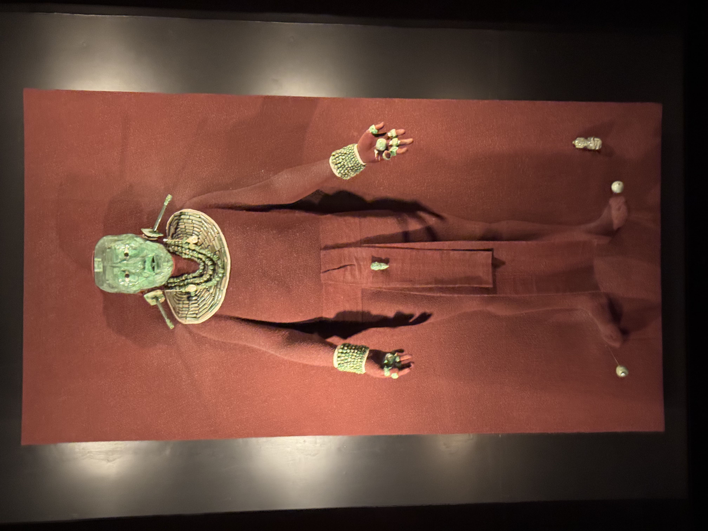

"Pakal was a steady ruler but his time as king was far from peaceful"

K'inich Jahahb' Pakal ("Resplendent Shield") was ruler of the Maya city of Palenque from 615 A.D. to his death in 683. When he came to the throne of Palenque, it was an embattled, destroyed city, but during his long and steady reign it became the most powerful city-state in the western Maya lands. Read more here.
Website designed by Harrison Peña, all content found from https://www.thoughtco.com/king-pakal-of-palenque-2136164